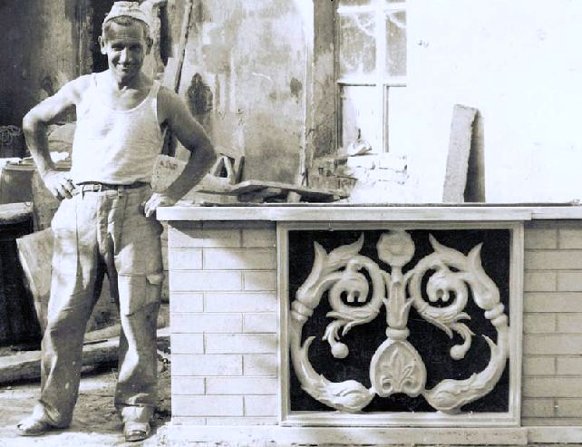

L'arte nel cemento dal 1900
Da quattro generazioni la famiglia Righi ha legato indissolubilmente la propria storia e la propria passione alla lavorazione artistica e strutturale del cemento.
Tutto è iniziato agli albori del secolo scorso, tramandando di padre in figlio i segreti di un mestiere che unisce la precisione tecnica alla cura artigianale del dettaglio.

Guido Righi - Luglio 1948
Oggi la tradizione continua con i fratelli P.I. Massimo e Geom. Giorgio Righi, nuovi esponenti di questa longeva attività artigianale. L'azienda opera all'interno di un'area produttiva di 10.000 mq situata nella zona industriale di Boretto (RE).
La posizione strategica nel centro nevralgico della provincia di Reggio Emilia rende la Righi Germano un punto di riferimento fondamentale, essendo perfettamente equidistante e comodamente collegata con le vicine province di Mantova, Parma e Cremona.